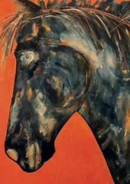

Suzanne Way

Yn arddangos am y tro cyntaf - dwi’n caru lliw, golau, symudiad.
Rwy’n mwynhau’r ffordd y mae paent yn symud i greu marciau a haenau annisgwyl.
Mae fy mheintiadau yn gyfryngau cymysg ac o natur haniaethol.
A first time exhibitor - I love colour, light, movement.
I enjoy the way paint moves to create unexpected marks and layers.
My paintings are mixed media and of an abstract nature.
07398 766391
suz@vsl.co.uk
TYDDYN YR HIDYLL, CHURCH BAY, RHYDWYN, HOLYHEAD, LL65 4HA
O bentref Llanfaethlu anelwch tuag at fae’r eglwys – mae fy mwthyn glas ar y chwith ar dro (tu ôl i’r wal isel) cyn i chi gyrraedd y lôn sy’n arwain i lawr at Church Bay a chaffi Wavecrest.
From Llanfaethlu village head towards church bay - my blue painted cottage is on the left on bend (behind low wall) before you reach the lane leading down to Church Bay and Wavecrest café.